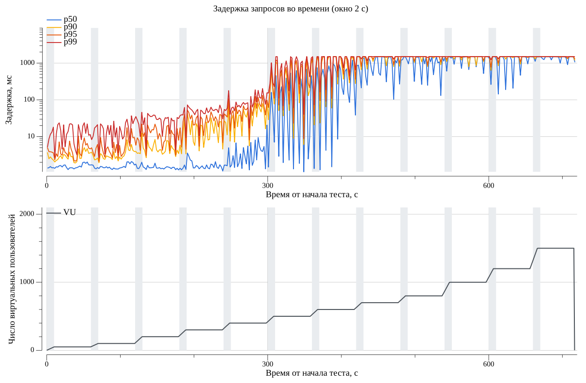
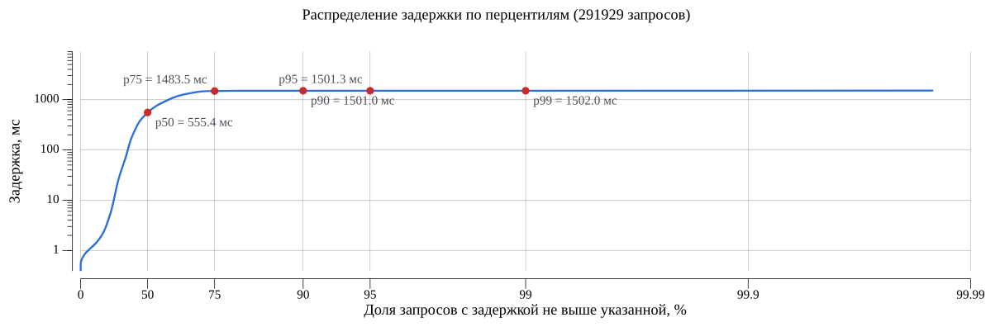
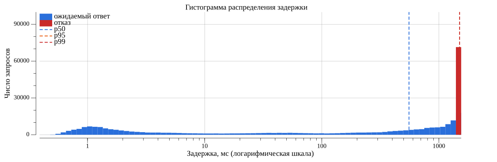
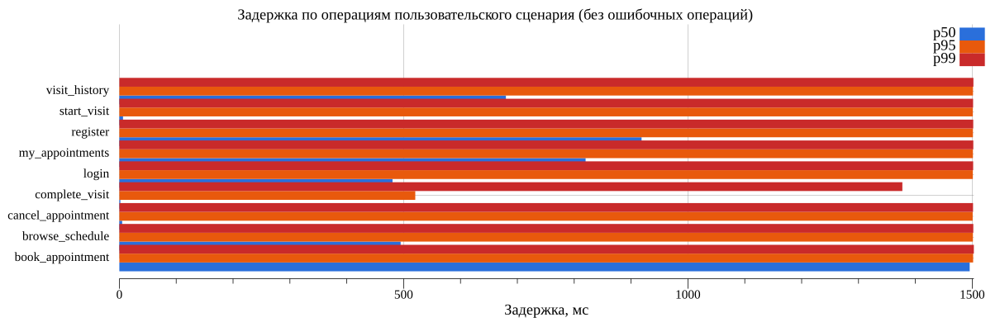
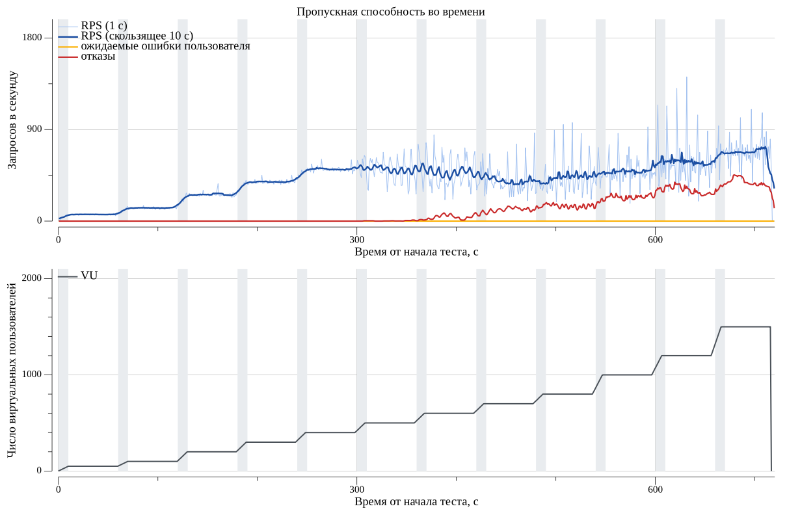
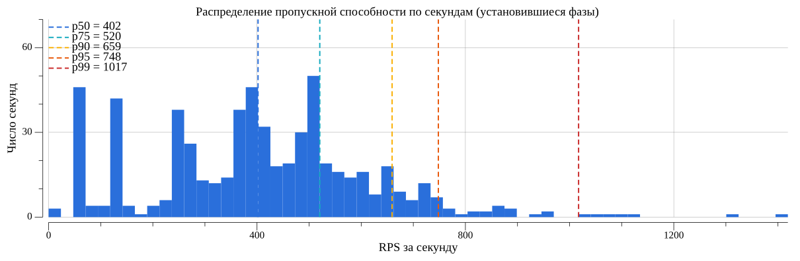
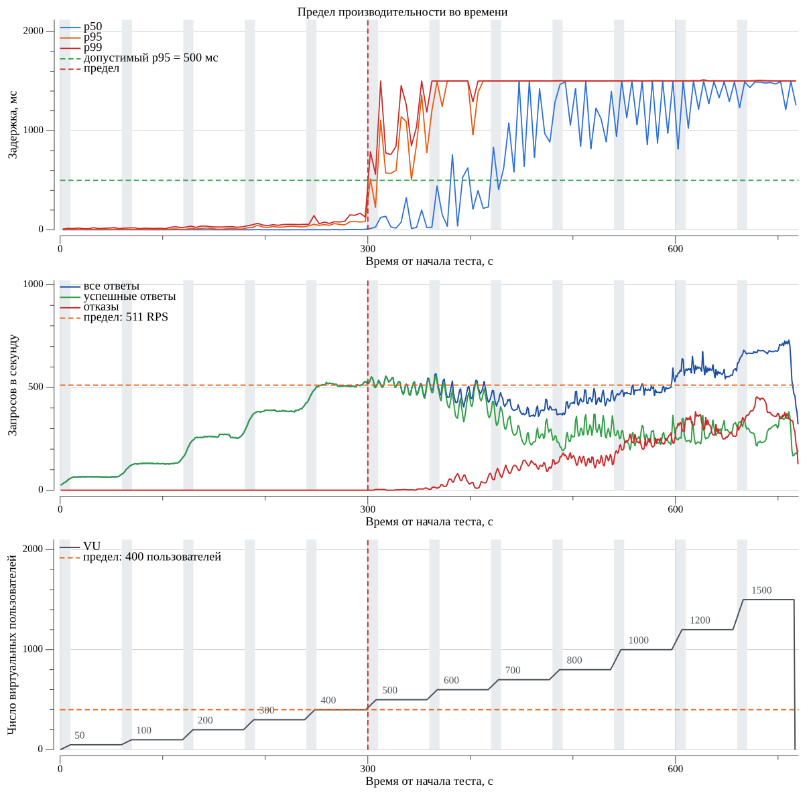
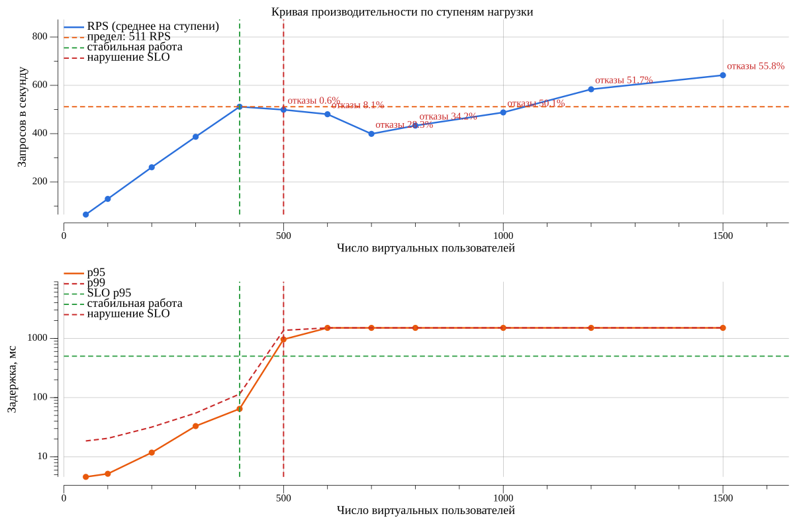
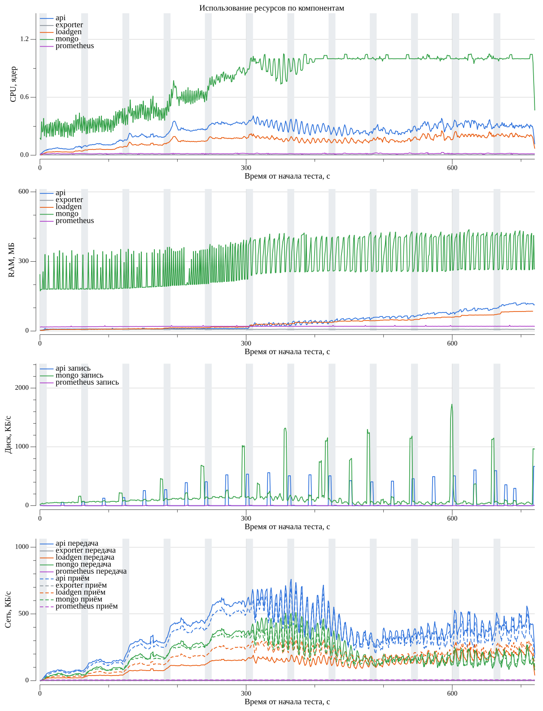

Ступенчатое увеличение нагрузки
Запросов291929
RPS среднее / медиана405 / 404
p50 / p95 задержки555 / 1501 мс
p99 задержки1502 мс
Отказы24.45%
Ошибочные операции0.00%
Стабильная работа до 400 VU (~511 RPS). Нарушение SLO начинается с 500 VU. Максимальная пропускная способность 642 RPS при 1500 VU.
Задержка
| Задержка, мс | count | min | mean | p50 | p75 | p90 | p95 | p99 | max |
|---|---|---|---|---|---|---|---|---|---|
| Все запросы | 291929 | 0.39 | 690 | 555 | 1483 | 1501 | 1501 | 1502 | 1534 |
| Корректные операции | 291929 | 0.39 | 690 | 555 | 1483 | 1501 | 1501 | 1502 | 1534 |
| Ошибочные операции | 0 | — | — | — | — | — | — | — | — |



Операции пользовательского сценария
| Операция | count | min | mean | p50 | p75 | p90 | p95 | p99 | max | Отказы | Ошибочные |
|---|---|---|---|---|---|---|---|---|---|---|---|
| book_appointment | 48866 | 1.13 | 973 | 1496 | 1501 | 1501 | 1502 | 1503 | 1534 | 55.81% | 0.00% |
| browse_schedule | 48930 | 0.52 | 656 | 495 | 1457 | 1501 | 1501 | 1502 | 1528 | 19.79% | 0.00% |
| cancel_appointment | 6521 | 0.77 | 269 | 4.97 | 273 | 1263 | 1501 | 1501 | 1531 | 8.02% | 0.00% |
| complete_visit | 13145 | 0.68 | 80.1 | 1.79 | 27.8 | 211 | 520 | 1377 | 1502 | 0.85% | 0.00% |
| login | 49077 | 0.39 | 633 | 480 | 1312 | 1501 | 1501 | 1502 | 1518 | 14.77% | 0.00% |
| my_appointments | 48760 | 0.49 | 769 | 820 | 1479 | 1501 | 1501 | 1502 | 1534 | 20.81% | 0.00% |
| register | 13250 | 0.49 | 800 | 918 | 1479 | 1501 | 1501 | 1502 | 1518 | 20.91% | 0.00% |
| start_visit | 15052 | 1.01 | 315 | 6.47 | 370 | 1501 | 1501 | 1502 | 1517 | 12.67% | 0.00% |
| visit_history | 48328 | 0.60 | 724 | 680 | 1484 | 1501 | 1501 | 1502 | 1534 | 24.26% | 0.00% |

Пропускная способность
| Показатель | count | min | mean | p50 | p75 | p90 | p95 | p99 | max |
|---|---|---|---|---|---|---|---|---|---|
| RPS за секунду | 720 | 0.00 | 405 | 404 | 521 | 658 | 748 | 1008 | 1418 |


Фазы нагрузки
| Участок | VU | RPS ср. | RPS p50 | RPS p5 | p50 мс | p95 мс | p99 мс | Отказы | CPU api | CPU mongo | RAM api, МБ | SLO |
|---|---|---|---|---|---|---|---|---|---|---|---|---|
| разгон до 50 | 50 | 37.9 | 38.5 | 9.25 | 1.45 | 3.96 | 15.0 | 0.00% | 0.03 | 0.26 | 5.76 | да |
| 50 VU | 50 | 65.0 | 65.5 | 59.0 | 1.56 | 4.60 | 18.6 | 0.00% | 0.07 | 0.29 | 8.34 | да |
| разгон до 100 | 100 | 105 | 107 | 72.0 | 1.45 | 4.71 | 19.5 | 0.00% | 0.09 | 0.31 | 8.54 | да |
| 100 VU | 100 | 130 | 131 | 116 | 1.53 | 5.19 | 20.6 | 0.00% | 0.12 | 0.34 | 8.71 | да |
| разгон до 200 | 200 | 212 | 210 | 162 | 1.63 | 10.5 | 34.0 | 0.00% | 0.16 | 0.41 | 8.81 | да |
| 200 VU | 200 | 261 | 255 | 241 | 1.42 | 11.8 | 31.8 | 0.00% | 0.20 | 0.45 | 9.05 | да |
| разгон до 300 | 300 | 348 | 348 | 294 | 1.35 | 22.0 | 46.0 | 0.00% | 0.22 | 0.49 | 9.15 | да |
| 300 VU | 300 | 387 | 386 | 365 | 1.61 | 33.1 | 54.9 | 0.00% | 0.28 | 0.62 | 9.75 | да |
| разгон до 400 | 400 | 468 | 466 | 419 | 1.77 | 46.9 | 108 | 0.00% | 0.29 | 0.69 | 9.93 | да |
| 400 VU | 400 | 511 | 507 | 485 | 2.58 | 64.7 | 115 | 0.00% | 0.33 | 0.82 | 10.8 | да |
| разгон до 500 | 500 | 550 | 556 | 443 | 22.8 | 332 | 735 | 0.00% | 0.35 | 0.93 | 17.0 | да |
| 500 VU | 500 | 499 | 525 | 294 | 61.5 | 959 | 1363 | 0.59% | 0.33 | 0.91 | 26.8 | нет |
| разгон до 600 | 600 | 551 | 535 | 346 | 149 | 1376 | 1501 | 2.91% | 0.30 | 0.94 | 31.6 | нет |
| 600 VU | 600 | 480 | 428 | 271 | 291 | 1501 | 1501 | 8.14% | 0.28 | 0.98 | 37.4 | нет |
| разгон до 700 | 700 | 424 | 396 | 274 | 702 | 1501 | 1502 | 20.68% | 0.26 | 1.00 | 42.1 | нет |
| 700 VU | 700 | 399 | 372 | 240 | 1079 | 1501 | 1502 | 28.29% | 0.24 | 1.01 | 51.8 | нет |
| разгон до 800 | 800 | 377 | 374 | 289 | 1406 | 1502 | 1504 | 38.64% | 0.26 | 1.00 | 56.4 | нет |
| 800 VU | 800 | 433 | 406 | 222 | 1215 | 1501 | 1502 | 34.20% | 0.25 | 1.01 | 60.5 | нет |
| разгон до 1000 | 1000 | 471 | 458 | 335 | 1436 | 1502 | 1502 | 42.08% | 0.27 | 1.00 | 64.6 | нет |
| 1000 VU | 1000 | 488 | 462 | 269 | 1500 | 1502 | 1503 | 50.14% | 0.30 | 1.01 | 75.1 | нет |
| разгон до 1200 | 1200 | 594 | 542 | 381 | 1500 | 1502 | 1503 | 54.29% | 0.32 | 1.00 | 80.1 | нет |
| 1200 VU | 1200 | 584 | 549 | 286 | 1487 | 1502 | 1503 | 51.68% | 0.32 | 1.01 | 92.5 | нет |
| разгон до 1500 | 1500 | 661 | 656 | 457 | 1479 | 1501 | 1502 | 50.06% | 0.30 | 1.00 | 100 | нет |
| 1500 VU | 1500 | 642 | 661 | 165 | 1484 | 1502 | 1504 | 55.80% | 0.30 | 0.99 | 116 | нет |
Поиск предела производительности


Использование ресурсов
| Компонент | Метрика | min | max | mean | median | p95 |
|---|---|---|---|---|---|---|
| api | CPU, ядер | 0.01 | 0.41 | 0.25 | 0.27 | 0.35 |
| api | Троттлинг CPU, с/с | 0.00 | 0.02 | 0.00 | 0.00 | 0.00 |
| api | Чтение с диска, КБ/с | 0.00 | 0.00 | 0.00 | 0.00 | 0.00 |
| api | Запись на диск, КБ/с | 0.00 | 670 | 54.4 | 0.00 | 507 |
| api | RAM (working set), МБ | 3.04 | 121 | 41.2 | 30.5 | 113 |
| api | Сеть, приём КБ/с | 0.39 | 693 | 329 | 327 | 582 |
| api | Сеть, передача КБ/с | 0.38 | 760 | 370 | 376 | 632 |
| api | Процессы и потоки | 7.00 | 16.0 | 9.07 | 9.00 | 11.0 |
| exporter | CPU, ядер | 0.00 | 0.01 | 0.00 | 0.00 | 0.01 |
| exporter | Троттлинг CPU, с/с | 0.00 | 0.00 | 0.00 | 0.00 | 0.00 |
| exporter | Чтение с диска, КБ/с | 0.00 | 0.00 | 0.00 | 0.00 | 0.00 |
| exporter | Запись на диск, КБ/с | 0.00 | 0.00 | 0.00 | 0.00 | 0.00 |
| exporter | RAM (working set), МБ | 2.70 | 7.74 | 7.24 | 7.32 | 7.69 |
| exporter | Сеть, приём КБ/с | 0.32 | 0.57 | 0.48 | 0.48 | 0.50 |
| exporter | Сеть, передача КБ/с | 1.65 | 4.70 | 4.01 | 4.00 | 4.17 |
| exporter | Процессы и потоки | 4.00 | 6.00 | 5.57 | 6.00 | 6.00 |
| loadgen | CPU, ядер | 0.00 | 0.25 | 0.15 | 0.16 | 0.22 |
| loadgen | Троттлинг CPU, с/с | 0.00 | 0.00 | 0.00 | 0.00 | 0.00 |
| loadgen | Чтение с диска, КБ/с | 0.00 | 0.00 | 0.00 | 0.00 | 0.00 |
| loadgen | Запись на диск, КБ/с | 0.00 | 0.00 | 0.00 | 0.00 | 0.00 |
| loadgen | RAM (working set), МБ | 2.68 | 85.3 | 34.1 | 30.9 | 82.7 |
| loadgen | Сеть, приём КБ/с | 1.00 | 324 | 181 | 192 | 284 |
| loadgen | Сеть, передача КБ/с | 0.89 | 249 | 125 | 138 | 212 |
| loadgen | Процессы и потоки | 7.00 | 9.00 | 8.65 | 9.00 | 9.00 |
| mongo | CPU, ядер | 0.16 | 1.05 | 0.78 | 0.96 | 1.04 |
| mongo | Троттлинг CPU, с/с | 0.01 | 1.08 | 0.60 | 0.80 | 1.03 |
| mongo | Чтение с диска, КБ/с | 0.00 | 0.00 | 0.00 | 0.00 | 0.00 |
| mongo | Запись на диск, КБ/с | 7.00 | 1726 | 150 | 79.5 | 751 |
| mongo | RAM (working set), МБ | 173 | 437 | 294 | 265 | 419 |
| mongo | Сеть, приём КБ/с | 0.24 | 437 | 190 | 171 | 356 |
| mongo | Сеть, передача КБ/с | 0.06 | 511 | 206 | 184 | 419 |
| mongo | Процессы и потоки | 39.0 | 153 | 88.1 | 72.0 | 148 |
| prometheus | CPU, ядер | 0.01 | 0.03 | 0.02 | 0.02 | 0.02 |
| prometheus | Троттлинг CPU, с/с | 0.00 | 0.00 | 0.00 | 0.00 | 0.00 |
| prometheus | Чтение с диска, КБ/с | 0.00 | 0.00 | 0.00 | 0.00 | 0.00 |
| prometheus | Запись на диск, КБ/с | 0.00 | 8.00 | 0.88 | 0.00 | 7.00 |
| prometheus | RAM (working set), МБ | 17.1 | 24.8 | 20.0 | 20.3 | 20.7 |
| prometheus | Сеть, приём КБ/с | 2.08 | 7.13 | 6.39 | 6.30 | 6.99 |
| prometheus | Сеть, передача КБ/с | 0.38 | 1.13 | 0.98 | 0.96 | 1.06 |
| prometheus | Процессы и потоки | 7.00 | 15.0 | 8.00 | 8.00 | 8.00 |

Коды ответов
| Код | Запросов |
|---|---|
| 200 | 175326 |
| 201 | 45221 |
| 500 | 71382 |
Окружение прогона
| Компонент | Логические CPU | Квота CPU | Резерв RAM, МБ | Лимит RAM, МБ | Образ | ID образа |
|---|---|---|---|---|---|---|
| api | 0,1 | 1 | — | 512 | vitaline-lab4-api:20261112-200633-ramp-mvcx | ddc21cc604eb |
| exporter | 6,7 | — | — | 64 | vitaline-lab4-exporter:1 | cc725b2d42f0 |
| loadgen | 4,5 | — | — | 2048 | vitaline-lab4-loadgen:1 | ca0c07b09f84 |
| mongo | 2,3 | 1 | — | 1024 | mongo:7 | 9896df581dfd |
| prometheus | 6,7 | — | — | 768 | prom/prometheus:v3.5.0 | 63805ebb8d2b |